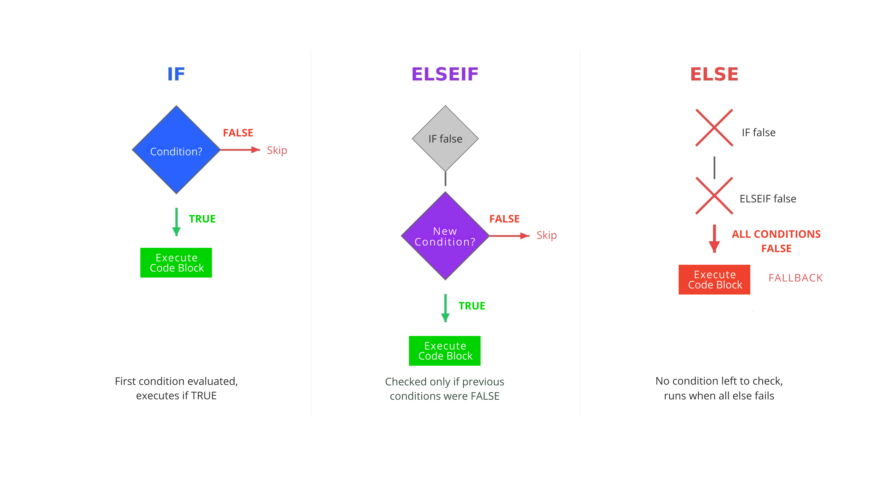

Chapter 1: Python Fundamentals for Precision Health#
1. Introduction#
Welcome to control flow, the mechanism that allows our programs to make decisions. In a clinical setting, decision-making is constant—a patient’s vital signs, lab results, and history all inform the next step. Similarly, in programming, control flow directs the execution path based on specific conditions. It’s the difference between a script that runs the same way every time and one that can react intelligently to changing data. In this section, we will learn how to use if, elif, and else statements to build foundational decision-making logic, enabling our code to respond to clinical data just as a practitioner would.
2. Key Concepts and Definitions#
Control Flow: The order in which a program executes statements.
if/elif/elsestatements are fundamental tools for directing this flow, allowing a program to choose a path based on whether a condition is true or false.Condition: An expression that evaluates to a Boolean value (
TrueorFalse). In a medical context, a condition could be a simple check liketemperature_c > 38.0or a complex one likesystolic_bp < 90 and heart_rate > 100.ifstatement: The primary statement for decision-making. It executes a block of code only when its associated condition evaluates toTrue. It’s used for single-path decisions, like flagging a high temperature.elsestatement: Provides an alternative block of code to execute when the precedingifcondition isFalse. This creates a binary, “this-or-that” choice, such as classifying a lab result as either “normal” or “abnormal.”elifstatement: Short for “else if,” this statement allows for checking multiple, sequential conditions after an initialif. It is essential for building chains of mutually exclusive choices, like classifying BMI into multiple categories (Underweight, Normal, Overweight, Obesity).Boolean Operators (
and,or): Used to create compound conditions by combining multiple expressions.andrequires all sub-conditions to be true, whileorrequires only one to be true. This is vital for modeling complex clinical rules, like a shock alert that can be triggered by either low blood pressure or high heart rate.Nested
ifstatement: Anifstatement placed inside anotheriforelseblock. It is used for tiered or dependent logic, such as first checking if a patient is on a specific medication (if on_warfarin:) before checking if their lab values are within the therapeutic range.
3. Main Content#
3.1 The if Statement: For a Single Condition#
An if statement executes a code block only if its condition is true. It is the simplest form of decision-making, perfect for when you only need to act in one specific scenario.
temperature_c = 38.5 # degrees Celsius
if temperature_c > 38.0:
print("Fever Alert: Patient temperature is high.")
# Expected Output:
# Fever Alert: Patient temperature is high.
Try it yourself: Modify the code above or write your own version
# TODO: Write your code here
# Hint: Try modifying the example above
This code runs the
printfunction because the patient’s temperature (38.5) is greater than the threshold (38.0), making the conditionTrue.
An if statement is great for a single check, but what about binary, yes/no decisions? For this, we use an if-else statement.
3.2 The if-else Statement: For Two Outcomes#
An if-else statement provides an alternative action when the if condition is false, handling binary decisions based on metrics like peripheral capillary oxygen saturation (SpO2).
spO2 = 91 # %
if spO2 < 92:
print("Alert: Low SpO2. Clinical review recommended.")
else:
print("SpO2 is within acceptable limits. Continue routine monitoring.")
# Expected Output:
# Alert: Low SpO2. Clinical review recommended.
Try it yourself: Modify the code above or write your own version
# TODO: Write your code here
# Hint: Try modifying the example above
The
ifblock runs for values less than 92.The
elseblock provides a default action for all other cases (92 or greater), ensuring one of the two blocks will always execute.
3.3 Compound Conditions with and / or#
The and and or operators allow you to evaluate multiple conditions in a single if statement, enabling more complex and realistic clinical rules.
# Simplified shock alert for abnormal vitals
systolic_bp = 85 # mmHg
heart_rate = 110 # beats per minute
if heart_rate > 100 or systolic_bp < 90:
print("Critical Alert: Patient may be in shock. Review immediately.")
# Expected Output:
# Critical Alert: Patient may be in shock. Review immediately.
Try it yourself: Modify the code above or write your own version
# TODO: Write your code here
# Hint: Try modifying the example above
orrequires only one condition to be true. This alert triggers becauseheart_rate > 100is true.andwould require all conditions to be true.
Important: This is a simplified model for educational purposes. Real-world clinical assessments for shock involve multiple factors and require professional medical judgment.
Pro Tip: When conditions become complex, use parentheses
()to group them. For example,if (heart_rate > 100 and systolic_bp < 90) or (patient_age > 65):is much clearer than writing it without parentheses, reducing the chance of logic errors.
We’ve handled one or two outcomes, but clinical practice often involves multiple, ordered categories. The if-elif-else chain is the perfect tool for this.
3.4 The if-elif-else Chain: For Ordered Choices#
The if-elif-else chain checks multiple conditions in order, executing only the code block for the first condition that evaluates to True. It is ideal for ordered classifications like Body Mass Index (BMI), where a value can only fall into one category.
Medical Background: Body Mass Index (BMI) is a value derived from the mass and height of a person. It’s a common, though imperfect, way to categorize whether a person has a healthy body weight. The ranges used here (
Underweight,Normal weight,Overweight,Obesity) are standard classifications used in public health.
# Classify a patient's Body Mass Index (BMI)
bmi = 27.5
if bmi >= 30:
classification = "Obesity"
elif 25 <= bmi < 30:
classification = "Overweight"
elif 18.5 <= bmi < 25:
classification = "Normal weight"
else:
classification = "Underweight"
print(f"Patient BMI ({bmi}) classifies as: {classification}")
# Expected Output:
# Patient BMI (27.5) classifies as: Overweight
Try it yourself: Modify the code above or write your own version
# TODO: Write your code here
# Hint: Try modifying the example above
Important: The
if-elif-elsechain evaluates conditions sequentially and stops at the firstTrueone. The order of your conditions is critical to prevent logic errors, especially when categories overlap.
3.5 Nested if Statements: For Tiered Logic#
A nested if is an if statement inside another. This creates tiered logic for dependent checks, where a second check only makes sense if a first condition is met.
In Practice: Nested logic is fundamental in clinical decision support systems. For example, a system might first check if a patient has diabetes (
outer if), and only then run a series of inner checks for blood sugar levels, recent A1c tests, and potential medication contraindications.
# Check therapeutic drug range for a patient on Warfarin
on_warfarin = True
inr_level = 2.5 # International Normalized Ratio
if on_warfarin:
print("Patient is on Warfarin. Checking INR level.")
if 2.0 <= inr_level <= 3.0:
print("INR is within therapeutic range.")
else:
print("Alert: INR is out of range. Dosage review needed.")
# Expected Output:
# Patient is on Warfarin. Checking INR level.
# INR is within therapeutic range.
Try it yourself: Modify the code above or write your own version
# TODO: Write your code here
# Hint: Try modifying the example above
The outer
ifconfirms the patient is on the medication before proceeding.The inner
ifonly runs if the outer condition (on_warfarin) isTrue, preventing an unnecessary INR check on a patient not taking the drug.
Debug Note: A common error with nested
ifstatements is incorrect indentation. Python relies on indentation to know whichiforelsea block of code belongs to. If your nested logic isn’t working as expected, double-check that your inner blocks are indented correctly (usually by four additional spaces).
4. Practice Exercises#
Exercise 1: Pediatric Fever Check Basic#
Objective: Use a simple if-else statement to handle a binary clinical decision.
Time: 3 minutes
Medical Context: Differentiating between a low-grade and high-grade fever in a pediatric patient is a common first step in assessment. A high-grade fever often warrants more immediate attention.
Create a variable pediatric_temp_c = 39.2. Write an if-else statement that prints “High-grade fever, consult pediatrician.” if the temperature is greater than 39.0, and “Low-grade fever, monitor and hydrate.” otherwise.
📝 Your Solution:
# TODO: Write your solution here
# Hint: Check the task description above
High-grade fever, consult pediatrician
🔍 Click to reveal solution
Solution
pediatric_temp_c = 39.2
if pediatric_temp_c > 39.0:
print("High-grade fever, consult pediatrician.")
else:
print("Low-grade fever, monitor and hydrate.")
Explanation: The condition pediatric_temp_c > 39.0 evaluates to True because 39.2 is greater than 39.0. Therefore, the code inside the if block is executed.
Key Learning: Using if-else for clear, two-pathway decisions.
Exercise 2: Blood Pressure Classification Intermediate#
Objective: Implement an if-elif-else chain with compound conditions to classify a patient’s blood pressure.
Time: 7 minutes
Medical Context: Based on the 2017 ACC/AHA guidelines, blood pressure is classified into categories to determine cardiovascular risk and guide treatment. The order of checks is crucial.
Create two variables:
systolic_bp = 125anddiastolic_bp = 85.Write an
if-elif-elsechain to determine the classification based on the rules below.
Important: Pay close attention to the specified order. The broad
ORconditions for hypertension must be checked before the more restrictiveANDconditions for the ‘Elevated’ and ‘Normal’ categories to ensure correct classification.
Hypertensive Crisis: Systolic > 180 OR Diastolic > 120.Hypertension Stage 2: Systolic >= 140 OR Diastolic >= 90.Hypertension Stage 1: Systolic is 130-139 (inclusive) OR Diastolic is 80-89 (inclusive).Elevated: Systolic is 120-129 (inclusive) AND Diastolic < 80.Normal: Systolic < 120 AND Diastolic < 80.Requires Manual Review: Any other case should be caught by a finalelseblock.
Reflection Moment: After you complete the task, consider this: What would happen if you checked for the ‘Elevated’ category before checking for ‘Hypertension Stage 1’? Test it with
systolic_bp = 135anddiastolic_bp = 75. This will help solidify why order is so crucial.
📝 Your Solution:
# TODO: Write your solution here
# Hint: Check the task description above
🔍 Click to reveal solution
Solution
systolic_bp = 125
diastolic_bp = 85
classification = ""
if systolic_bp > 180 or diastolic_bp > 120:
classification = "Hypertensive Crisis"
elif systolic_bp >= 140 or diastolic_bp >= 90:
classification = "Hypertension Stage 2"
elif (130 <= systolic_bp <= 139) or (80 <= diastolic_bp <= 89):
classification = "Hypertension Stage 1"
elif (120 <= systolic_bp <= 129) and diastolic_bp < 80:
classification = "Elevated"
elif systolic_bp < 120 and diastolic_bp < 80:
classification = "Normal"
else:
classification = "Requires Manual Review"
print(f"BP {systolic_bp}/{diastolic_bp} mmHg is classified as: {classification}")
Explanation: The code checks each condition in order. The first two if/elif statements are false. The third elif is true because diastolic_bp (85) is between 80 and 89. The chain stops executing, and “Hypertension Stage 1” is assigned. The order prevents a reading like 150/95 from being misclassified as “Stage 1” instead of “Stage 2”.
Key Learning: The order of an if-elif-else chain is critical for correct classification, especially when conditions overlap.
Exercise 3: Simplified qSOFA Score Advanced#
Objective: Use independent if statements and arithmetic to calculate a clinical risk score.
Time: 5 minutes
Medical Context: The Quick Sequential Organ Failure Assessment (qSOFA) score helps identify patients with suspected infection who are at high risk of poor outcomes. A score of 2 or more is a critical alert.
Calculate a patient’s qSOFA score. Start with qsofa_score = 0. Add 1 point for each of the following conditions that are met:
Respiratory rate >= 22 breaths/min
Systolic blood pressure <= 100 mmHg
Glasgow Coma Scale (GCS) < 15
Given the variables respiratory_rate = 25, systolic_bp = 95, and gcs_score = 15, calculate the final score and print a “Sepsis Alert: qSOFA score is 2 or more.” message only if the score is 2 or higher.
📝 Your Solution:
# TODO: Write your solution here
# Hint: Check the task description above
🔍 Click to reveal solution
Solution
respiratory_rate = 25
systolic_bp = 95
gcs_score = 15
qsofa_score = 0
if respiratory_rate >= 22:
qsofa_score += 1 # This is a shortcut for qsofa_score = qsofa_score + 1
if systolic_bp <= 100:
qsofa_score += 1
if gcs_score < 15:
qsofa_score += 1
print(f"Patient's qSOFA score: {qsofa_score}")
if qsofa_score >= 2:
print("Sepsis Alert: qSOFA score is 2 or more.")
Explanation: The code uses three independent if statements to check each criterion. The patient meets the criteria for respiratory rate and systolic blood pressure, so the score becomes 2. The final if statement checks this total and prints the alert.
Key Learning: Using a series of independent if statements is effective when multiple, non-exclusive conditions contribute to a total score or outcome.
5. Practical Applications#
Automated Clinical Alerts:
if/elif/elselogic is the engine behind real-time monitoring systems in hospitals. A script can continuously check a patient’s data stream from an ICU monitor. If a value crosses a critical threshold (e.g.,if potassium > 5.5:orif spO2 < 90:), the system can trigger an immediate alert to a nurse’s or doctor’s pager. This use of control flow directly impacts patient safety by enabling rapid intervention.Patient Triage and Stratification: In busy emergency departments or for population health management, algorithms use
if-elif-elsechains to stratify patients by risk level. For example, a script could implement the qSOFA score logic to classify a patient with a suspected infection, assigning them to a “High Risk,” “Medium Risk,” or “Low Risk” pathway for care, ensuring resources are allocated to those who need them most.Clinical Trial Eligibility Screening: The complex inclusion and exclusion criteria for clinical trials can be modeled with nested
ifstatements and compound conditions. A program can automatically screen a patient’s electronic health record (if patient_age >= 18 and has_diagnosis_X and not on_medication_Y:), flagging them as a potential candidate. This programming technique dramatically speeds up the otherwise manual and time-consuming recruitment process.Pharmacogenomic Dosing Guidance: Control flow is essential for personalizing drug dosages based on a patient’s genetic markers. A clinical decision support tool might use logic like:
if patient_has_CYP2C19_variant: recommend_alternative_drug; elif patient_is_poor_metabolizer: recommend_lower_dose; else: use_standard_dose;. This has a real-world impact by personalizing treatment to improve efficacy and reduce the risk of adverse drug events.
6. Summary and Key Takeaways#

In this section, we’ve explored how to control the flow of our Python programs using if, elif, and else statements to make decisions. This is a crucial skill for translating clinical rules and logic into functional code.
Control flow allows programs to execute different code paths based on whether conditions evaluate to
TrueorFalse.The
ifstatement handles a single condition,if-elsehandles a binary choice, and theif-elif-elsechain manages a sequence of mutually exclusive options.Compound conditions using
andandorallow for modeling complex rules, while nestedifstatements handle dependent, tiered logic.The order of conditions in an
if-elif-elsechain is critical, as only the code block for the first true condition is executed.These simple structures are the building blocks for sophisticated applications, from real-time patient alerts to personalized medicine.
With this foundation in decision-making, we are now ready to explore how to make our programs repeat actions using loops, which is the focus of the next section.